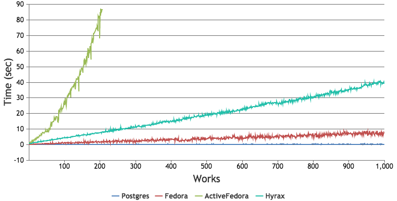
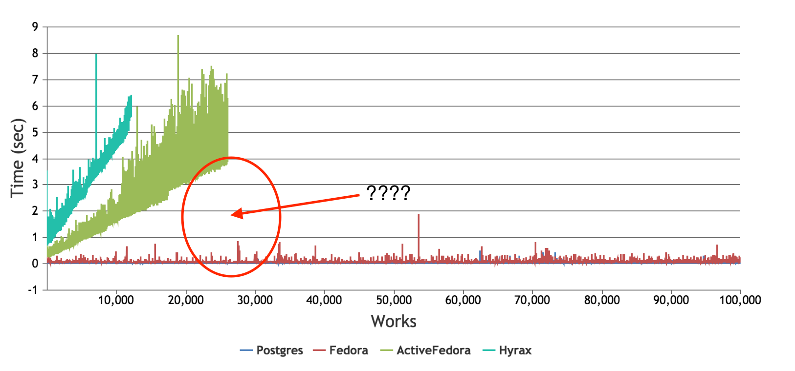
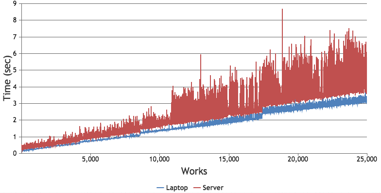
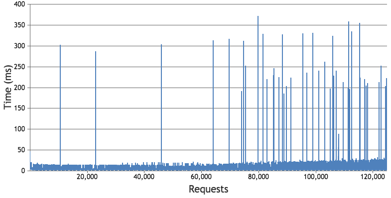
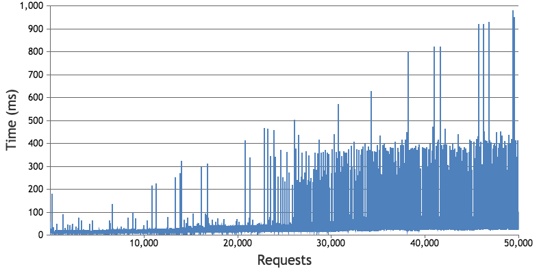
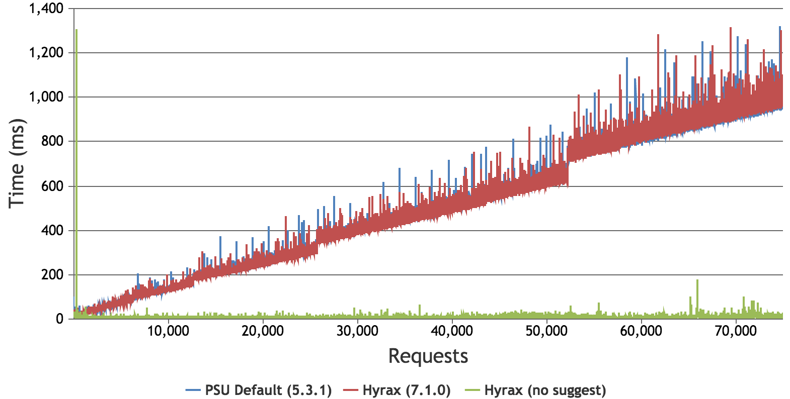
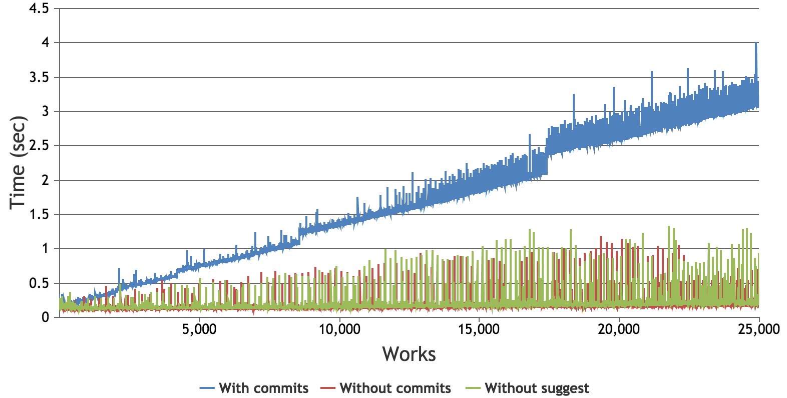

Penn State's Cultural Heritage Object repository (CHO) project will migrate collections from CONTENTdm with 300,000 items.
What would performance be like with that?
Mimic our large collection use case and build collections with many thousands of works. We will use a default Hyrax application, and a Valkyrie-based Rails application to benchmark and compare the performance of each.
Benchmark.benchmark do |bench|
work = Work.new
work.part_of_collections = [collection.id.to_uri]
bench.report { adapter.persister.save(resource: work) }
end
Benchmark.benchmark do |bench|
i = Image.new
bench.report do
i.member_of_collections = [collection]
i.save
end
end
Benchmark.benchmark do |bench|
child = Work.new
result = adapter.persister.save(resource: child)
bench.report do
collection_resource.has_collections << result.id
adapter.persister.save(resource: collection_resource)
end
end
Benchmark.benchmark do |bench|
child = Image.new
child.save
bench.report do
parent.ordered_members << child
parent.save
end
end
Test was reduced to 1,000 works

Benchmark.benchmark do |bench|
id = SecureRandom.uuid
randomize_file(id)
bench.report do
work = Work.new(id)
file = storage_adapter.upload(File.open('tmp/small_random.bin', 'r'), resource: work)
work.has_files = [file.id]
metadata_adapter.persister.save(resource: work)
end
end
Benchmark.benchmark do |bench|
randomize_file
bench.report do
image = create_image # returns saved image with default metadata and permissions
permissions = image.permissions.map(&:to_hash)
file_set = FileSet.new
actor = Hyrax::Actors::FileSetActor.new(file_set, user)
actor.create_metadata(visibility: 'open')
file_set.save
Hydra::Works::AddFileToFileSet.call(file_set, File.open('tmp/small_random.bin', 'r'), :original_file)
actor.attach_to_work(image)
actor.file_set.permissions_attributes = permissions
image.save
end
end
Given our 300,000-work collection use case, Penn State opted to use Valkyrie because it demonstrated the ability to handle extremely large collections
Why the difference?
Does a laptop environment perform similarly to the server environment? Yes
Is reading from Fedora limiting performance? No
5 GETs x 25,000 works = 125,000 requests
Is writing to Fedora limiting performance? Somewhat
2 POSTs x 25,000 works = 50,000 requests
Are Solr updates limiting performance? Yep!
3 updates x 25,000 works = 75,000 requests
# schema.xml
<copyField source="*_tesim" dest="suggest"/>
<copyField source="*_ssim" dest="suggest"/>
<tokenizer class="solr.KeywordTokenizerFactory"/>
<filter class="solr.StandardFilterFactory"/>
<filter class="solr.LowerCaseFilterFactory"/>
<filter class="solr.RemoveDuplicatesTokenFilterFactory"/>
<tokenizer class="solr.ICUTokenizerFactory"/>
<filter class="solr.ICUFoldingFilterFactory"/>
<filter class="solr.EnglishPossessiveFilterFactory"/>
<filter class="solr.EnglishMinimalStemFilterFactory"/>
<filter class="solr.TrimFilterFactory"/>
ActiveFedora adapter with different Solr configurations
lots!!!!
Is Valkyrie "better" than Hyrax? No!
Should I use Valkyrie instead of Hyrax? Depends
Will Valkyr-izing Hyrax fix these problems? Potentially